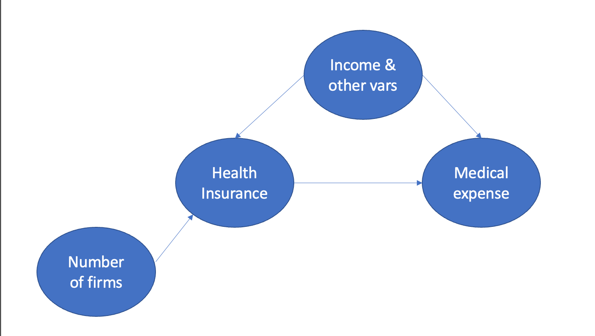

`stat_bin()` using `bins = 30`. Pick better value with `binwidth`.
Next we can look at the main exposure variable, healthinsu, and its relationship to the outcome. 38% of observations have health insurance.
mean(df$healthinsu ==1)
[1] 0.3821984
The histogram and boxplot below show that individuals with and without health insurance appear to have similar distributions of medical expenses in this dataset.
First we’ll run a univariate linear regression model with medical expenses as the dependent variable and health insurance as the independent variable. This tells us that having health insurance is associated with a multiplicative increase of \(e^{0.09} = 1.09\) (95% CI = [1.03, 1.15]) in annual expenditures (not sure about units here).
Health insurance is likely not exogeneous (i.e., unconfounded) in this analysis. Several variables that would have a causal effect on medical expenses would also be expected to have an effect on whether or not a patient has health insurance. For example, patients with multiple illnesses will have a higher need for being insured and will almost certainly have higher medical expenses. Patients who are older may be more likely to be employed and receive and insurance and will also have higher expenses. Because of this, the univariate analysis we performed above does not explain a causal effect between having health insurance and medical expenses.
4. Instrumental variable analysis
There seem to be two possible options for an instrumental variables: logincome and firmlocation. The criteria for an instrumental variable are:
Relevance: The variable is associated with the exposure (i.e., healthinsu). That is, \(P[A = 1|Z=z] != P[A=1|Z=z']\), where A is having health insurance and Z is the instrument.
Exclusion: The variable is only associated with the outcome (logmedexpense) through the exposure variable - \(Y_i(a, z) = Y_i(a)\)
Exogeneity: The relationship between the outcome and instrument is not confounded - i.e., no common causes between healthinsu and Z.
Considering logincome , I don’t think this would meet Criterion #3. Having a higher income is likely associated with other health-related factors such as having a healthier lifestyle that would affect health-related costs independent of having health insurance. So I don’t think this would make a good instrument.
firmlocation could reasonably meet these two criteria. We can first check #1 by testing the association between logmedexpense and healthinsu. We can see below that among individuals who work in a firm with multiple locations (firmlocation = 1), 61% of individuals have healthinsurace, whereas among individuals who work in a firm with a single location only 38% have healthinsurance. Running a logistic regression model testing healthinsu ~ firmlocation shows that this is statistically significant. So Criterion #1 is met.
Criterion #2 is more challenging to test from the data, but I think it seems reasonable to assume that the size of a company would only affect medical expenditures through whether their exmployees have health insurance.
The DAG I would propose for this analysis is this:

5. Instrumental variable analysis using ivreg
First, we can use the ivreg function from the AER package. This gives us an IV estimate of the local average treatment effect (LATE) of \(-1.5\), telling us that having health insurance has a average effect of \(e^{-1.5} = 0.22\) multiplicative increase (e.g., a nearly 5x reduction) of health expenses among compliers.
ivreg(logmedexpense ~ healthinsu + illnesses + age + logincome | firmlocation + illnesses + age + logincome, data=df)
Call:
ivreg(formula = logmedexpense ~ healthinsu + illnesses + age + logincome | firmlocation + illnesses + age + logincome, data = df)
Coefficients:
(Intercept) healthinsu1 illnesses age logincome
7.15693 -1.50155 0.45402 -0.01824 0.15404
6. 2-stage regression
We can also perform the IV analysis manually using 2-stage OLS.
Notation:
\(A\): The exposure variable (healthinsu); binary
\(Y\): The outcome variable (logmedexpense); continuous
\(Z\): The instrumental variable (firmlocation)
\(X\): The other covariates/confounders
Stage 1: Estimate the effect of the IV on exposure using OLS.
\(E[A|X,Z] = \alpha_0 + \alpha_1 Z + \alpha_2 X\)
We’ll then take predicted values of A from this model: \(\hat{A} = \hat{\alpha_0} + \hat{\alpha_1} Z + \hat{\alpha_2} X\)
Stage 2: Estimate the effect of the exposure on the outcome using the predicted values from before.
Call:
lm(formula = logmedexpense ~ a_hat + illnesses + age + logincome,
data = df)
Residuals:
Min 1Q Median 3Q Max
-6.3355 -0.6712 0.1485 0.8533 3.7523
Coefficients:
Estimate Std. Error t value Pr(>|t|)
(Intercept) 8.658487 0.698044 12.404 < 2e-16 ***
a_hat -1.501553 0.364023 -4.125 3.74e-05 ***
illnesses 0.454017 0.010051 45.172 < 2e-16 ***
age -0.018243 0.004064 -4.489 7.24e-06 ***
logincome 0.154042 0.034390 4.479 7.57e-06 ***
---
Signif. codes: 0 '***' 0.001 '**' 0.01 '*' 0.05 '.' 0.1 ' ' 1
Residual standard error: 1.237 on 10084 degrees of freedom
Multiple R-squared: 0.1756, Adjusted R-squared: 0.1753
F-statistic: 537 on 4 and 10084 DF, p-value: < 2.2e-16
2-stage OLS gives an estimate of \(\hat{\beta}_{LATE} = -1.5\), the same that we got from using ivreg.
Because the exposure variable is binary, it might make more sense to model it using logistic regression in Stage 1 rather than OLS. In this case, we can use 2-stage residual inclusion (2SRI).
Stage 1: Estimate the effect of the IV on exposure using logistic regression
\(logit(P[A=1]) = \alpha_0 + \alpha_1 Z + \alpha_2 X\)
$ = A - $
We’ll take the residuals \(\epsilon_1\) for the next stage.
Stage 2: Estimate the effect of the exposure on the outcome while including the residuals from stage 1
\(Y = \beta_0 + \beta_1 A + \beta_2 \hat{\epsilon}_2 + \beta_3 X + \epsilon_2\)
Call:
lm(formula = logmedexpense ~ healthinsu + epsilon + illnesses +
age + logincome, data = df)
Residuals:
Min 1Q Median 3Q Max
-6.3033 -0.6689 0.1478 0.8532 3.7779
Coefficients:
Estimate Std. Error t value Pr(>|t|)
(Intercept) 7.37630 0.39494 18.677 < 2e-16 ***
healthinsu1 -2.01447 0.47854 -4.210 2.58e-05 ***
epsilon 0.88138 0.20157 4.373 1.24e-05 ***
illnesses 0.45446 0.01007 45.125 < 2e-16 ***
age -0.01794 0.00398 -4.508 6.63e-06 ***
logincome 0.16016 0.03547 4.515 6.39e-06 ***
---
Signif. codes: 0 '***' 0.001 '**' 0.01 '*' 0.05 '.' 0.1 ' ' 1
Residual standard error: 1.236 on 10083 degrees of freedom
Multiple R-squared: 0.1765, Adjusted R-squared: 0.176
F-statistic: 432.1 on 5 and 10083 DF, p-value: < 2.2e-16
This gives an estimate with a larger magnitude: -2.01.
Interpretation
Both the 2-stage OLS and 2SRI models give negative coefficients, suggesting that having health insurance decreases health expenses, which is different from the univariate and multivariate estimates. This suggests that the relationship between health insurance and health expenses could be distorted by unmeasured confounding.
By performing an ANOVA test, we can see that the Stage-1 model has a large partial F-statistic (57.1), which is well above the value of 10 that is commonly used as a rule of thumb.